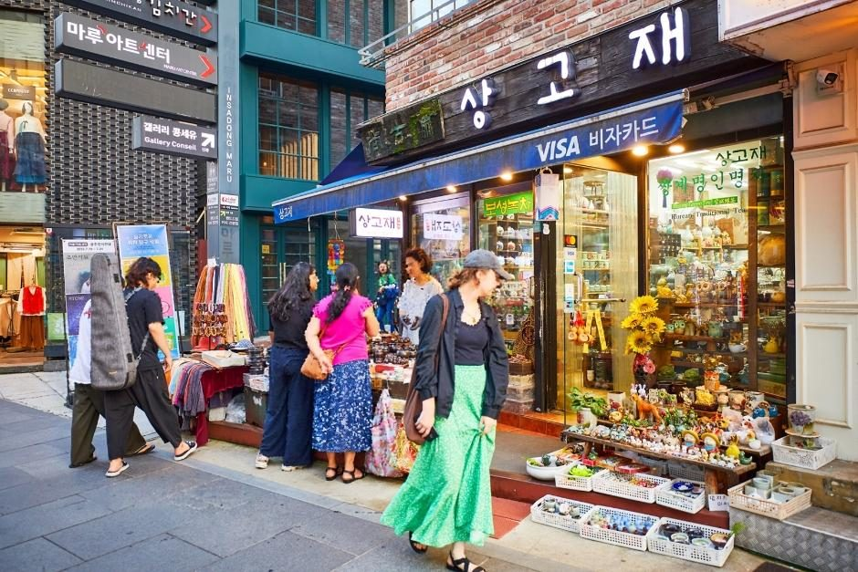
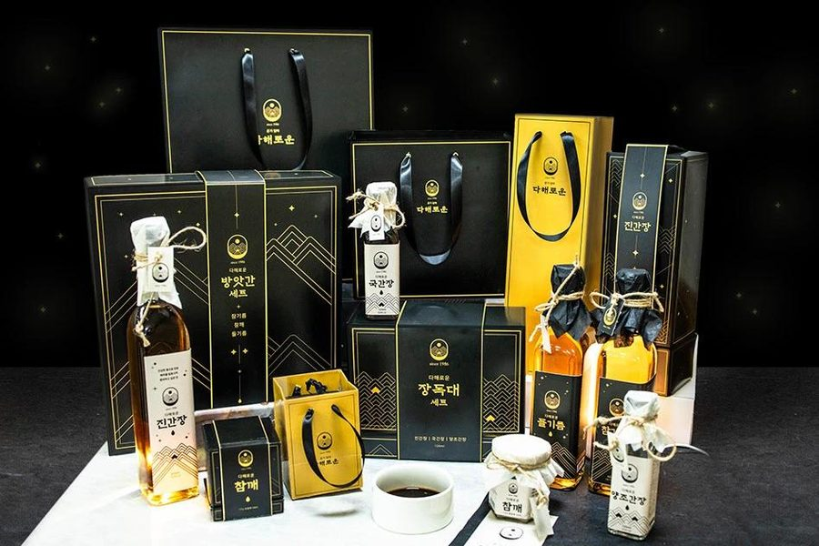
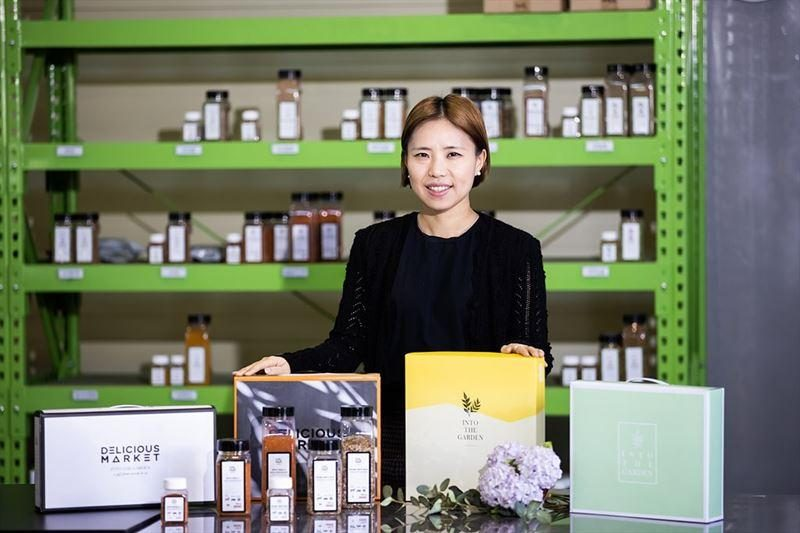
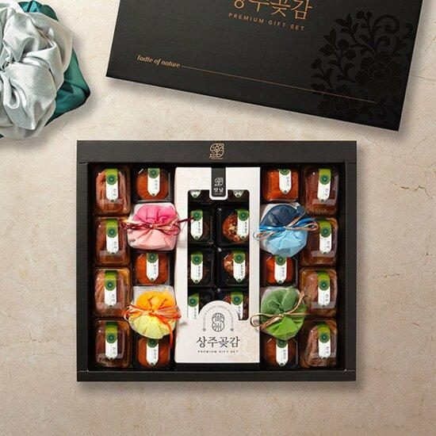

보훈은 일상으로
상생은 미래로
영웅에게 감사하는 마음을 우리의 일상 속 실천으로 바꿉니다.
국가보훈대상자와 청년 제대군인이 편의점, 음식점, 미용실, 약국, 의류점, 생활스포츠 등
우리 동네에서 더 많은 혜택을 받을 수 있도록 합니다.
왜, 보훈상생인가?
국가의 제도와 재정
국민 + 소상공인 + 기업의
자발적 참여
365일 생활 속
보훈문화
국가가 예우하는 보훈에서
국민 모두가 함께하는 보훈으로
국가보훈부는 보훈급여·교육·취업·의료·복지·교통 등 다양한 제도적 지원을 제공하고 있습니다.
WITH BOHUN은 그 위에 민간의 참여와 생활 속 혜택을 연결하는 플랫폼을 구축합니다.
365일 생활 속 보훈혜택
우리 동네 어디서나 만나는 보훈혜택 — 카테고리로 한눈에 살펴보세요.
외식
음식점 · 카페 · 베이커리
생활
편의점 · 생활서비스
미용
미용실 · 뷰티
패션
의류 · 잡화
건강
약국 · 건강서비스
스포츠
헬스 · 골프 · 생활체육
쇼핑
지역특산품 · 중소기업 제품
여행
관광 · 숙박 · 관광서비스
“오늘 어디에서 보훈혜택을 받을 수 있을까요?”
내 주변 매장 찾기보훈상생 5대 핵심사업
365 생활 속 보훈혜택
가까운 곳에서 365일 받는 보훈혜택. 일상 어디서나 자연스럽게 예우를 실천합니다.
전국 상생매장 네트워크보훈상생위원회
지역 소상공인과 함께 만드는 보훈상생 네트워크. 관광특구·전통시장·상점가·골목상권 중심으로 확산합니다.
27개 지회 운영보훈예우점수
보훈을 많이 실천하는 매장을 한눈에 확인. 보훈할인·캠페인 참여·지역사회 기여·사회공헌 활동을 데이터화합니다.
투명한 보훈 데이터보훈상품 인증제
좋은 제품을 구매하는 것이 보훈으로 이어지도록. 지역특산품·중소기업 우수제품·사회적 가치 상품을 인증합니다.
착한 소비 캠페인민간 보훈상생 생태계
보훈대상자 × 국민 × 소상공인 × 기업 × 지자체, 모두가 참여하는 대한민국 보훈 플랫폼을 만듭니다.
함께 만드는 보훈문화
보훈상생매장 참여 후 신규 고객 유입 체감 응답 (예시 데이터)
보훈에 참여하면
우리 가게도 성장합니다.
신규 고객 유입
보훈대상자 및 가족의 방문이 늘어납니다.
지역주민의 긍정적 인식
“보훈을 실천하는 착한 가게”로 알려집니다.
브랜드 신뢰도 향상
보훈상생 인증이 매장의 신뢰를 더합니다.
지역상권 활성화
참여 매장이 늘수록 상권 전체가 살아납니다.
보훈을 실천하는 것이 지역경제를 살리는 일이 됩니다.
보훈상품 인증제 — 좋은 소비가 좋은 보훈으로
지역특산품과 중소기업 우수제품 등에 보훈의 가치를 연결합니다.



보훈을 데이터로 기록합니다.
각 매장의 보훈활동을 데이터로 관리하는 보훈예우점수 — WITH BOHUN이 개발할 차별화된 핵심 기능입니다.
○○식당 · 보훈상생 인증매장 (예시)
* 보훈예우점수는 기획 단계의 예시 지표입니다. 실제 점수 산정은 객관적인 평가기준과 검증체계를 마련한 뒤 운영될 예정입니다.
우리 동네에서 시작하는 보훈
지역별 보훈상생 캠페인이 전국 곳곳에서 진행됩니다.